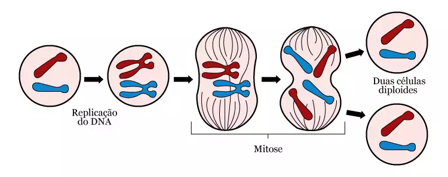

É um processo de divisão celular contínuo em células eucarióticas, onde uma célula dá origem a duas outras células idênticas e com o mesmo número de cromossomos. Isso ocorre porque antes da divisão, o material genético da célula é duplicado.
É responsável pela formação de gametas em vegetais, pelo desenvolvimento embrionário através da divisão de zigotos, e principalmente pelo crescimento, renovação e cicatrização de tecidos.
Apesar de ser um processo continuo, mas pode ser dividido em 4 fases, prófase, metáfase, anáfase e telófase.
Prófase: Fase mais longa da mitose, ocorre a condensação do DNA que fora duplicado no período da inferfase. A membrana que envolve o núcleo desorganiza-se e forma vesículas que ficam no citoplasma até o final da mitose, momento em que o envoltório nuclear é reconstruído. Um par de centríolos migra para cada polo da célula e microtúbulos surgem entre eles, dando início à formação do fuso mitótico. Nessa etapa o nucléolo também se desintegra.
Metáfase: Nessa etapa, os cromossomos migram para o plano equatorial da célula. Cada cromossomo possui duas cromátides, as quais se prendem ao microtúbulo por meio de uma região denominada de cinetocoro. Nessa etapa, os cromossomos atingem seu maior grau de compactação.
Anáfase: os cromossomos separam-se, e cada cromátide segue em direção ao polo da célula. Essa migração ocorre em virtude do encurtamento das fibras do fuso.
Telófase: ocorre reconstrução dos envoltórios nucleares, descondensação dos cromossomos e a reconstrução do nucléolo.
No final da anáfase até o fim da telófase, observa-se o processo de citocinese. Esse processo consiste na divisão do citoplasma e na formação de duas células-filhas.
Saiba mais sobre o ciclo celular da mitose aqui!
© Ana Luiza, Anna Vitória, Carlos Daniel, Diana e Isabelly (2023)